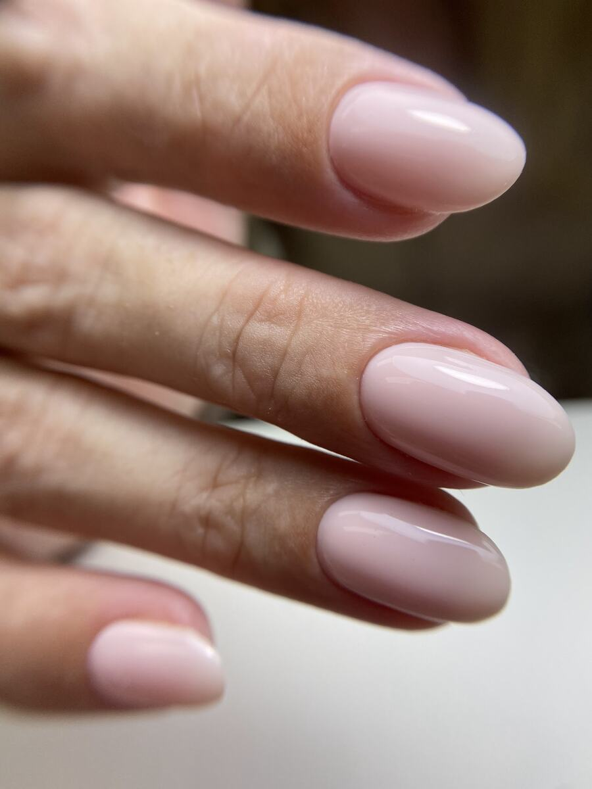
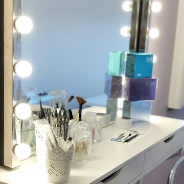
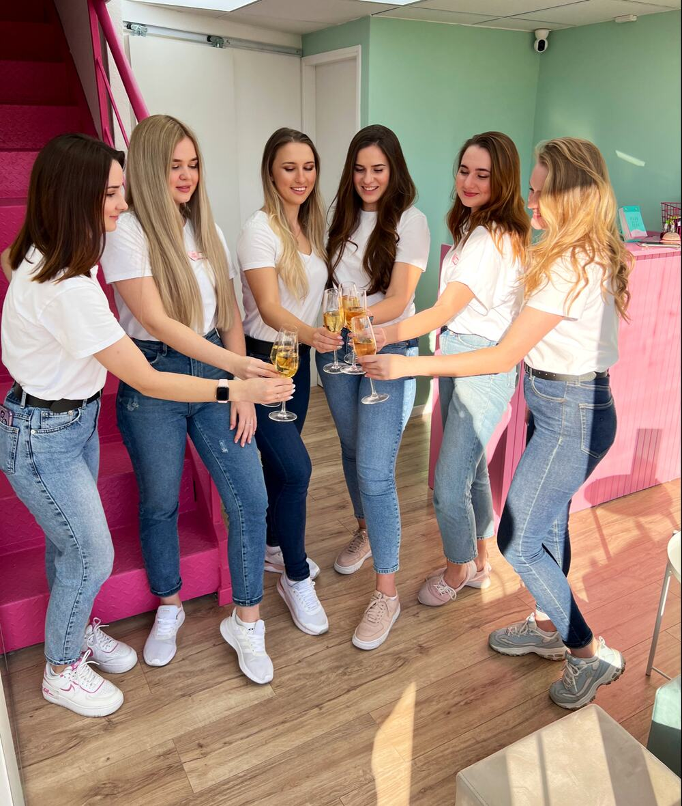
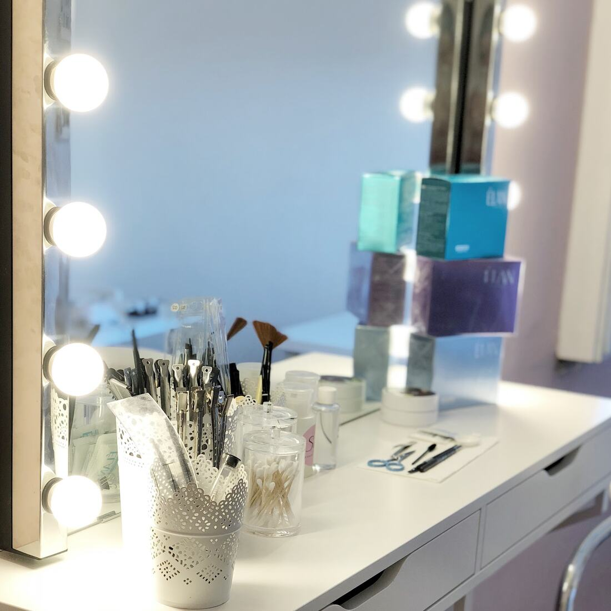
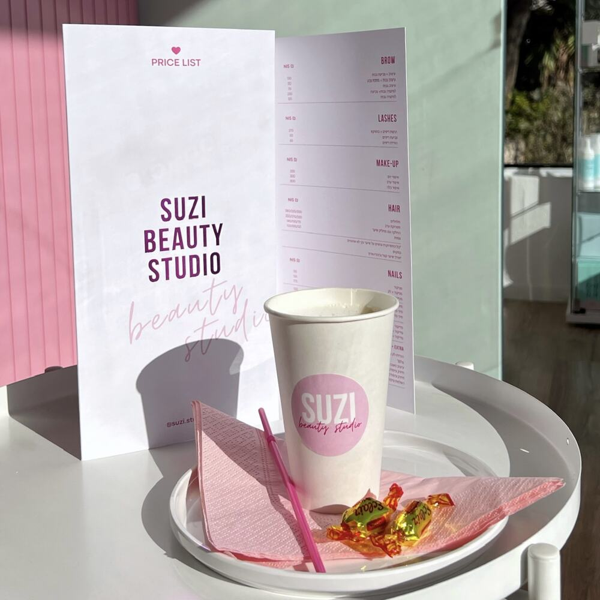

ציפורנייםNails
מניקור, פדיקור, לק ג׳ל, חיזוק ובנייהManicure, pedicure, gel polish, strengthening and extensions
קונספט לדוגמה שנבנה עבור סטודיו היופי Suzi · זה אינו האתר הרשמי של העסקA sample concept built for Suzi Beauty Studio · This is not the business’s official website
ציפורניים, גבות, ריסים והרבה ורודNails, brows, lashes and a lot of pink
Beauty studio “Suzi” הוא סטודיו יופי בשדרות ירושלים 12, קריית ביאליק: ציפורניים, גבות, ריסים, הסרת שיער, איפור ושיער.Beauty studio “Suzi” is a beauty studio at 12 Sderot Yerushalayim, Kiryat Bialik: nails, brows, lashes, hair removal, make-up and hair.


מדרגות ורודות, קיר מנטה ובנות הסטודיו, בשדרות ירושלים 12.Pink stairs, a mint wall and the studio girls, at 12 Sderot Yerushalayim.
״כל הבנות מקצועיות ומדהימות״“All the girls are professional and amazing”
Maya Kisilov · Google
איפור, תלתלים ותסרוקות ערב, או שיעור איפור כדי לדעת לבד.Make-up, curls and evening updos, or a lesson to do it yourself.

בחרי טיפולים, וההודעה לוואטסאפ תיכתב לבד.Pick treatments and the WhatsApp message writes itself.
הסט שלךYour set
עוד לא נבחר טיפול. געי באחד הבקבוקונים.Nothing picked yet. Tap a bottle.
4.9
83 ביקורות, ממוצע 4.9 כוכבים.83 reviews, a 4.9 star average.
״שירותיות גבוהה מאוד, כל הבנות מקצועיות ומדהימות… בחורות מקצועיות והמקום מקסים, מזמין, נקי ומסודר.״
“Very high level of service, all the girls are professional and amazing… Professional girls, and the place is lovely, inviting, clean and tidy.”
״סלון יופי מדהים! שירות מצויין ותמיד אדיבים… המאסטריות מאוד מקצועיות ועושות עבודות מאוד יפות ואסתטיות.״
“An amazing beauty salon! Excellent service and always kind… The masters are very professional and do very beautiful, neat work.”
״שירות מושלם והעבודה מושלמת עוד יותר, דיוק ברמה הגבוה ביותר. הבנות נעימות ושירותיות.״
“Perfect service and the work is even more perfect, precision at the highest level. The girls are pleasant and attentive.”
״מקום נעים ומזמין, צוות מקסים ואדיב!… נסטיה עובדת במקצועיות, עדינות ויעילות. מקום מאוד נקי ואסתטי.״
“A pleasant, inviting place, a lovely and kind team!… Nastia works professionally, gently and efficiently. A very clean, beautiful place.”
״שירות מעולה, בנות מקסימות… וגם מקום יפה ומחמם את הלב.״
“Excellent service, lovely girls… and a beautiful, heart-warming place.”
ציטוטים מתוך ביקורות 5 כוכבים בגוגל.Quoted from 5-star Google reviews, translated from Hebrew.
הסטודיו הוורוד, וקפה בכוס של סוזי.The pink studio, and coffee in a Suzi cup.

שדרות ירושלים 12, קריית ביאליק12 Sderot Yerushalayim, Kiryat Bialik